Case Study
1. Introduction
Waypost is an open-source, lightweight, self-hosted feature flag management platform that specializes in A/B
Testing, providing analytical insights for your experiments on both the front-end and back-end.
As a team of developers starts to iterate on their application and develop new features, they’ll want to have
confidence that the choices they’re making are benefiting the business. They’ll want to collect and analyze
the behavior of users of their application in order to gain insights on whether their choices are helping,
hurting, or having no effect on their bottom line. They’ll also need an easy and quick way to manage these new
features and to turn them off if something goes wrong.
By using feature flags with Waypost to manage and test their new features, developers can confidently push
new features to their applications with the knowledge that the risk of the feature hurting their business is
minimized.
1.1 Hypothetical Waypost User
Solar Flair is a solar panel installation company with a handful of software engineers on their staff. Their
main way of gaining business is via their website’s landing page. As is standard in the solar panel
installation business, their primary sales funnel starts with clicking a button called “Get a Quote Today”
which opens up a form.
In Solar Flair’s first iteration of their website, the form requires the customer to input the architectural
data and their address in order to calculate how much sunlight their location typically gets. The developer
team at Solar Flair sets up event tracking to try and understand how people interact with their website and
they discover that 80% of people who click the “Get a Quote Today” button never finish the form and their
quote never gets calculated. They get lost in step one of the funnel.
The developers get together and discuss why this is happening and theorize that entering all the
architectural data is tedious and cumbersome. They believe they can increase the percentage of people signing
up for an appointment by using a 3rd-party software which only requires the address of the home as input and
then calculates the quote using satellite imagery and climate statistics. However, this software costs a
subscription fee, so the team wants to be sure that this fee is worth the cost and gets them enough new
customers to gain a profit. In addition, since it’s a 3rd-party software/API that may get updated, they don’t
want their entire site to go down if it gets a major update and the quote calculation doesn’t work.

Solar Flair needs a way to measure and analyze user behavior when they use the new quote feature vs. the
old one. In other words:
- They need to serve users either the new quote feature or the old one.
- They also need to determine whether users preferred the new quote, the old quote, or the change had no
difference in behavior.
If something were to go wrong with the new quote feature, Solar Flair would like all users to be served the
old one as soon as possible to minimize any business losses from the bug while it gets fixed.
1.2 Comparing Two Versions
One option is to roll out the new feature temporarily and measure how the metrics change. But there are
several problems with this:
- The new feature hasn’t been tested in production and could have bugs. Therefore, Solar Flair wouldn’t want it
rolled out to everyone at once.
- This strategy doesn’t control for external factors, like time. For example, users may be more likely to
sign up at different times of the year. Without controlling for external factors, the change in metrics might
be attributed to the new feature when it was actually caused by something else.
Therefore, Solar Flair needs to be sure the only difference between the two user experiences is the different
feature being served to them.To do this, they’ll have to show both features during the same time period and
randomize who gets which feature.
The solution Solar Flair is looking for is experimentation, also known as A/B testing.
2. A/B Testing
2.1 What is A/B Testing?
A/B testing is the practice of testing two or more versions of a feature at once, in which a random group of
users is assigned to receive one version, and another random group of users is assigned the other version, for
a certain period of time. The A/B test can be considered the most basic kind of randomized controlled
experiment. In its simplest form, there are two treatments and one acts as the control for the other [1].
2.2 Interpreting Results
After an A/B test has finished running, one can analyze the results to make a data-driven decision. Every
experiment should have a primary metric, and possibly secondary metrics, by which it will be evaluated. The
aggregate values for these metrics get collected for the test group and the control group for comparison. One
can use statistics to determine if there was a statistically significant change in the metrics or not.
Statistical significance is determined by a statistic called a “p-value”. With this information, the team can
conclude whether the new feature being tested was “successful” or not, and make a decision whether to rollout
the feature to their entire userbase, to remove it, or to continue to run more experiments. For example, if
Solar Flair obtained a statistically significant increase in form completion rate with their new quote
feature, then they could confidently roll out the new feature.
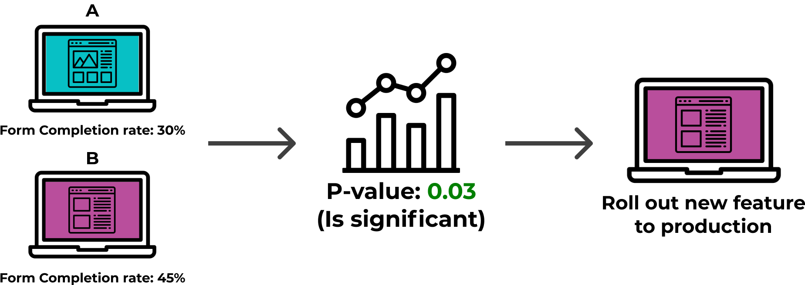
2.3 Challenges of A/B Testing
As A/B testing requires a large amount of data to work, implementing A/B testing comes with several
challenges. There are two primary categories that the challenges of A/B testing fall under: engineering
challenges and statistics challenges.
2.3.1 Engineering Challenges
From an engineering standpoint, developers must contend with the challenges of:
- How to assign users randomly into groups? Users must be randomly assigned so that the two groups can be
fairly compared, and so the two groups can be roughly the same size.
- How to keep track of what group they were in? Each user must be given the same treatment on each visit.
- How to log user events? Each time an event that we are interested in occurs, it must be logged to the
database along with relevant information regarding who, what, and where. In addition, one must log when a user
is exposed to an experiment. This will result in a huge volume of writes to the database.
- How to pull the metrics to analyze afterward? Each metric is calculated differently and some may rely on the
same events, requiring the event data to be queryable and accessible. The metric calculation should also be
automated so that one does not have to manually query the metrics each time.
2.3.2 Statistical Challenges
From a statistics standpoint, the main challenges are:
- Designing the experiment correctly such that we can gain meaningful results from it. It may be surprising how
easy it is to design an experiment incorrectly. For example, when running multiple experiments at the same
time, one must ensure that different experiments do not influence each other’s results.
- Determining which statistical tests to run on the data. There are many different types of statistical tests
to choose from, each with different purposes. Therefore, picking which statistical tests to run must be done
thoughtfully and with care.
3. Implementing Two Versions of a Site
Before Solar Flair can place their users into “test” and “control” groups, they must be able to serve the
groups different versions of their website at the same time. There are two common ways to implement this:
- Have multiple deployments of the website running and route users to one or the other.
- Use feature flags to render their site one way or the other at run time.
3.1 Possible Solution: Multiple Deployments
This strategy is implemented by having two versions of an application running in production at once. The new
version of the application is deployed to a set percentage of the organization’s servers. A router (usually a
load balancer) will route users to the two sets of servers. The “rollout percentage,” the percentage of the
users get routed to one group vs. the other, can be set to any percentage the user wants, whether it be 50/50,
10/90, etc.
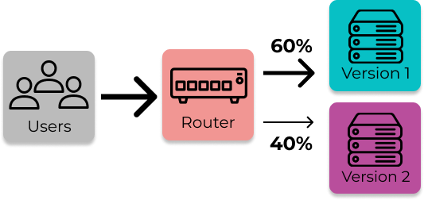
From here, if the new version proves to be an improvement, then the new version of the application is pushed
to all the servers. If instead it has a negative effect on business metrics, then all servers with the new
version are rolled back.
This approach allows an organization to run two versions of their website, collect user data on both
versions, and compare the results. However, there are some trade-offs to this strategy.
3.1.1 Trade-off #1: Full redeploy to fix bugs
Using multiple deployments for serving two versions of a website requires a full take-down and redeploy to
fix a bug. If there’s a critical bug in the new version of the application, the following steps must be
completed:
- The rollout percentage must first be set to 0% so all requests will be handled by the group of machines
with the old version of the application.
- The machines serving the new version must be rolled-back to handle traffic without crashing.
- The load balancer must be updated to allow rolled-back servers to receive requests again.
- Once the bug is fixed, the new version must be deployed, the rollout percentage must be set and the router
must be configured accordingly.
Many of these steps can be automated, but if the organization is not using a 3rd-party, they must spend
resources to do that. For a small organization with minimal resources, this is undesirable.
3.1.2 Trade-off #2: Complexity when testing multiple features
As discussed earlier, if two versions of a feature are being served with multiple deployments means there are
two versions of the entire application running in production. If another feature is also being tested at that
time, that means another version of the application is needed to test it assuming that the two features being
tested do not overlap.
For example, if Solar Flair also wants to test out a new contact form that is hosted on a separate page from
their quote form, then those two new features would not overlap. If instead they wanted to test changing the
form’s submit button and wanted to see how each combination of the form and button affected user behavior,
they’d need four total deployments.
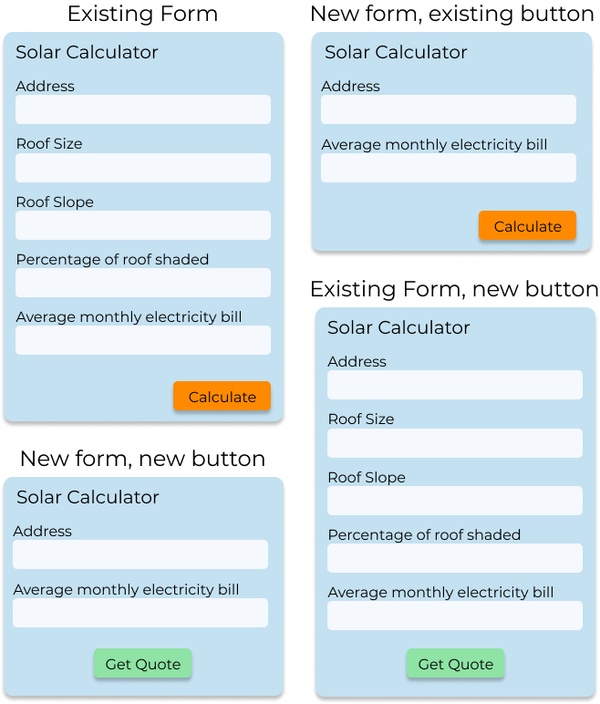
Regardless of whether the additional new features being tested are overlapping or not, more tests results in:
- More deployed copies of an application.
- More versions of an application to keep track of, which can lead to human errors, such as implementing a
change on the wrong version of the application.
A large company with a large infrastructure and some DevOps engineers may not be be bothered by additional
deployments of code and keeping track of the different versions of the application. But it would be more
challenging for smaller organizations to implement this solution.
Solar Flair only has a handful of developers and servers. Therefore it would not be wise to implement this
strategy given the trade-offs. Fortunately for them, there’s a way to serve users two different versions of a
site with just one instance of an application, through using feature flags.
3.2 Possible Solution: Feature Flags
“A feature flag is a software development process used to enable or disable functionality remotely without
deploying code” [2].
A feature flag is conditional logic connected to a remote service that can alter its flow without a
redeployment. One can think of a feature flag as a toggle that determines whether a feature is turned “on” or
“off.” If the flag is turned “on”, the conditional returns true and the user receives one version of the
application. If the flag is turned “off”, the conditional returns false and they receive another.
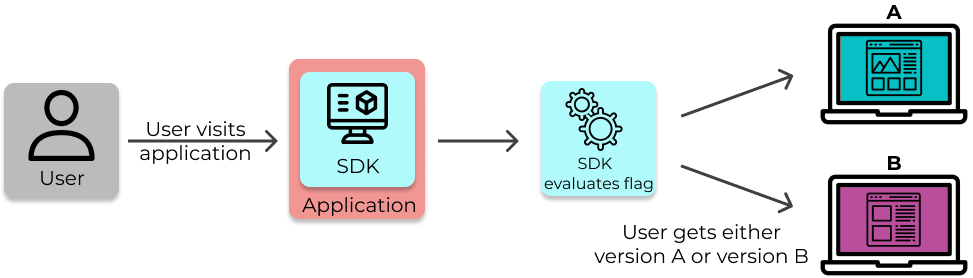
One can wrap as much or as little code in the feature flag as they like. It could be something big like a
completely different UI, or something small, like different colors on a “Checkout” button.
Feature flags can be static, meaning they’re either “on” or “off” for everyone; or dynamic meaning that
they’re “on” or “off” for some users based on a criteria, like whether they’re in a “control group” or a “test
group” of an A/B test. In order to make a flag dynamic, a “Toggle Router” is needed [3].
3.2.1 Toggle Router
A toggle router is simply something that “can be used to dynamically control which codepath is live” [3]. The
evaluateFlag function from the example above is a toggle router. One can implement toggle routers in many
ways, like a simple in-memory store or a standalone app with a user interface (UI).
A toggle router can be customized to evaluate a flag given any desired criteria. Using a toggle router, Solar
Flair could set a rollout percentage so that a set percentage of users receive the new quote form while the
rest receive the old one.
For example, Jack and Jill are two potential customers, both looking for solar panel installations for their
respective homes. They each visit solarflair.net in their browsers. A toggle router inputs their unique
identifiers (like their IP address) into a hashing algorithm and determines that Jack will receive the old
version of the quote form and Jill will receive the new version. All this happens using just one version of
Solar Flair’s website.
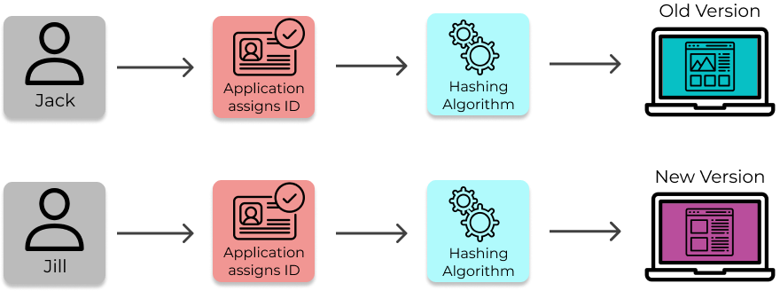
3.2.2 - Using Feature Flags for A/B Testing
As mentioned earlier, two key challenges of implementing AB Testing are:
1. Assigning users randomly into groups.
2. Serving a user the same treatment on each visit.
Solar Flair can solve these two challenges by using feature flags with a toggle router.
4. Existing Solutions
Solar Flair now knows they want to integrate feature flags into their web app and use them to perform A/B
tests. What they don’t know is exactly how to implement this new system. Do they want to build it from scratch
or integrate with an existing solution? If they want to build it, how much time and effort is needed to
accomplish that?
4.1 DIY
If they decide to build the system, they’ll need to accomplish three things:
- Persistently store their feature flag data.
- Connect the flag data to their application to dynamically serve the two versions of their site.
- Collect user event data and analyze it to gain insights to drive their decision making.
4.1.1 Config File
The easiest and simplest way to store all the flag data in one place is by using a configuration file. This
file would contain the flag data in a data structure and could look something like the code below:
The trade-offs with the config file are:
- Flags can’t be set dynamically, they’re “on” or “off” for all users.
- Every time the config file is updated the application must be redeployed for the changes to take effect.
The config file’s shortcomings make this option unappealing.
4.1.2 Database
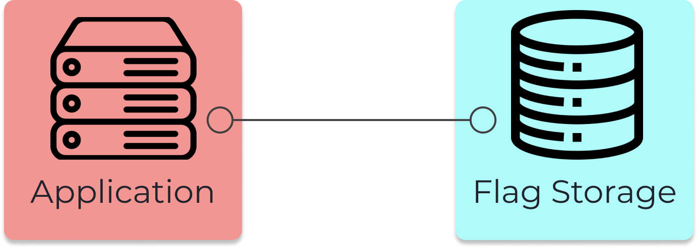
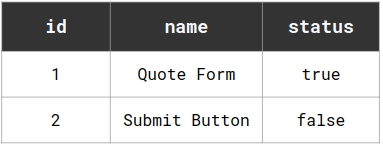
A slightly better option for storing flag data is by using a database. With this configuration, Solar Flair’s
app would query the database each time a flag’s status is needed and updates to the flags would be made using
SQL commands, which would be cumbersome for non-technical employees to manage feature flags. The main benefit
of this architecture is it would allow flag data to be updated without redeployment. [4]
However, it still doesn’t solve the core problem of dynamically evaluating the flags. In addition, neither of
these two options address the analysis of the data. What Solar Flair needs is something bigger and more
robust. A place to easily manage their flags and their experiments. What they need is a feature flag
management service, specifically one that can handle A/B testing.
4.1.3 Building a Feature Flag Management Service
Feature flag management services are platforms that allow developers to view all their feature flags in one
place, usually through a user interface. They make the process of performing CRUD operations on the flags
easier to implement and keep track of. In addition, the services often contain tools, such as custom flag
evaluations, allowing developers to get more out of their feature flags.
To build this system oneself, one will need to build both the feature flagging and A/B testing services. One
must first design and build the architecture to manage and evaluate feature flags. This will require several
components such as a frontend, backend, database, and SDK at a minimum.
- A frontend interface will enable both developers and non-technical members of the organization to
easily manage feature flags and experiments.
- A backend server and database will enable persistent storage of data.
- An SDK that lives in the organization’s app should return the “on” or “off” status for a given user
based on factors like rollout percentage. It is typically necessary to have SDKs on both the client and
server, since there are features to be managed on both.
- The SDKs also need to receive updated feature flag data when a change is made from the frontend,
ideally in real-time so that features can be shut off immediately if needed.
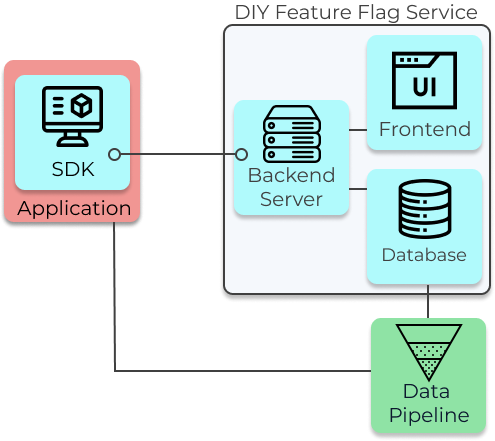
4.1.4 Building the A/B Testing Functionality
In addition to the infrastructure for feature flag management, one must also build the A/B testing
functionality to gain insights from changes in user event data. There are 4 steps to this:
- Collect the user event data.
- Process the data.
- Run statistical analysis.
- Display the results.
For the first step, a system must be in place to log user events and save them to a database using ETL
pipelines. This infrastructure can be built in-house, or a 3rd party service like Mixpanel can be used.
However, using a 3rd party service will offer less flexibility.
Then, the data must be processed by querying the event data and calculating metrics for each experiment and
treatment.
Next, the metrics are used as inputs in statistical tests to determine whether the change in them is likely
due to the change in feature or to random chance.
Lastly, the results are displayed, ideally with some visualization.
Having a data scientist on a team to give guidance would make the last three steps go smoothly. For example,
a data scientist would know which statistical tests to run depending on the data types, how the metrics need
to be measured and aggregated, and which kinds of visuals are most helpful. Without someone with that
knowledge, a team may have trouble building an A/B testing solution.
4.1.5 Trade-offs
Building your own platform for feature flagging and experimentation comes with several benefits:
- Flexibility over how it is deployed, and ability to customize what features to include and how they are
implemented. For example, the team could choose whether to use classical statistics or Bayesian statistics for
the experiment analysis.
- Keep data in-house, reducing concerns around privacy and security
However, this approach also comes with a set of trade-offs:
- Time and resources to build the feature flag management and A/B testing platform
- Responsibility to maintain the system into the future
As we saw earlier, building an A/B testing platform completely from scratch is extremely hard and time
consuming (expect at least 2,000 hours of work to get something decent) [5]. In other words, building the
platform yourself is not free.
One must also consider the accuracy and reliability of the system. Maintaining reliable analytics pipelines
is more difficult than one may think [6]. Therefore, as the ones who created the system, the team will also be
responsible for maintaining it into the future.
4.2 Paid Solutions
The other option is to use a 3rd party feature flagging and A/B testing platform that handles the engineering
aspects for you so that your team does not have to invest time into building and maintaining this system. Some
well-known players are LaunchDarkly and Optimizely. Both are feature-rich and reliable. LaunchDarkly is a
popular feature flag management platform that offers a wide range of features, such as A/B testing, targeting
users by attribute, integrations with productivity tools, workflow automation, and a support team. Optimizely
is a similar platform which focuses primarily on A/B testing. However, there are several trade-offs that come
with this approach:
- Since they are built by an external team, there is not as much flexibility for customization as an in-house
platform. They would not be able to change what features to include and their implementation, or the types of
statistical tests to use.
- Using one of these services entails letting a third party store user data, which some business may not be
comfortable with or legally allowed to.
- They typically cost a monthly fee and can be out of budget for smaller companies.
5. Waypost
If Solar Flair was a bigger company with more engineers, then building their own system could be a good
option. If they wanted a large set of features quickly and had a larger budget, then a paid solution like
LaunchDarkly would be a good choice. However, the DIY option costs too much time and resources, and the paid
option is too expensive for them and doesn’t allow them to customize the functionality. They also don’t need
many extra features, as they only need to run simple experiments.
Therefore, there was an opportunity to create a feature flagging platform that fits the needs of small
businesses like Solar Flair. We created Waypost, a feature flag management platform that specializes in A/B
Testing. Waypost is self-hosted and open-source, so it is completely customizable while still containing the
core features our target user needs.
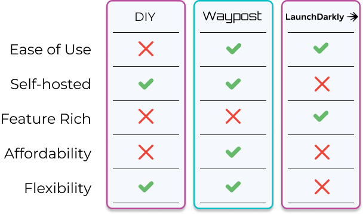
5.1 Architecture Overview
Waypost provides a feature flag and A/B testing solution through the integration of it’s own components
(colored blue) and some existing infrastructure (colored red). The existing infrastructure is the application
that is using feature flags and a PostgreSQL database for storing user event data, which will be referred to
as the “Events DB”. For example, Solar Flair’s “Application” would be their web application that renders their
website and their “Events DB” would be their existing user event database.
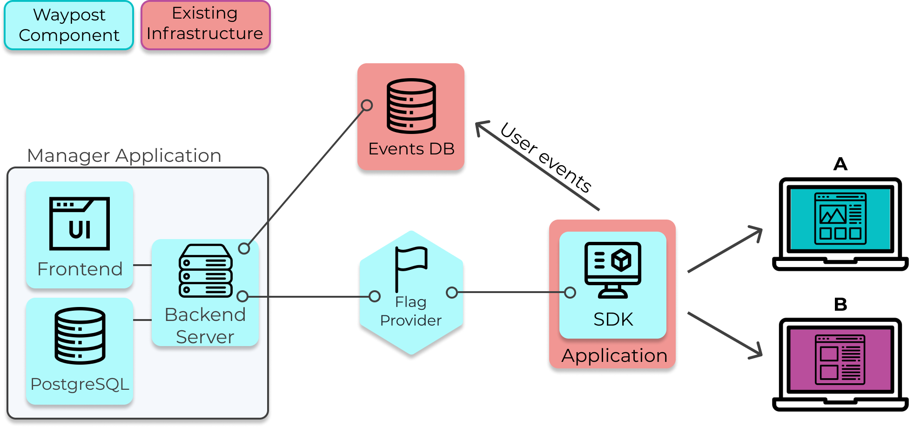
General Overview of the Components and their responsibilities:
- The Manager Application is responsible for managing feature flags and experiments.
- The Manager App sends copies of the flag data to the Flag Provider, which saves the copy and forwards it to
each application running the Waypost SDK.
- The SDK is embedded into an application and is responsible for evaluating flags at run-time, and thus
allowing one to serve multiple versions of their website to their users. It also performs the assignment of
users into treatments.
- The developer using Waypost is responsible for supplying their existing user event logging solution, in which
their application sends user event data to their Events DB.
- The Manager App queries the Events DB when it runs statistical analysis for the experiments and displays the
results in the Manager’s UI.
5.2 Manager Application
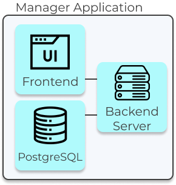
The Manager App is what developers use to manage their feature flags and view experiment results. It also
contains a statistics pipeline that performs the querying of data and statistical analysis for experiments.
The Manager App has three components, a React.js application that serves as the User Interface (UI), a backend
server built with Express.js, and a PostgreSQL database used for data persistence.
The Manager App’s UI provides features for developers and non-technical members of an organization to manage
their flags and experiments:
Flags Dashboard
The Flags Dashboard displays all the flags being used by an application. From here you can toggle, delete,
and create flags.

Flag Details Page
To visit the Details Page for any flag, click on a flag’s name on the Flags Dashboard. On this page can view
and edit the name, description, and rollout percentage of the flag.
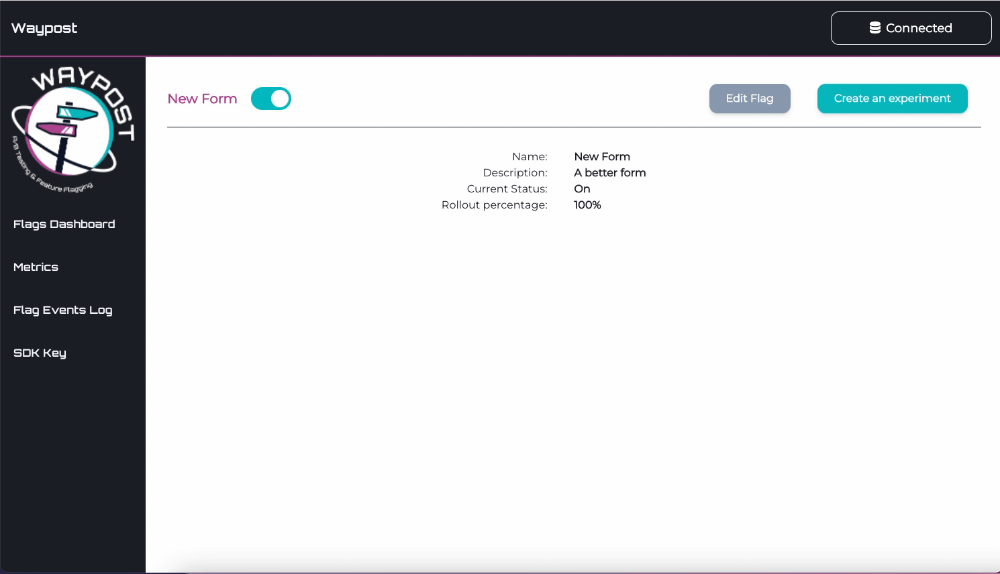
This page also allows one to view and edit custom assignments. Custom assignments are used to ensure that a
flag evaluates a certain way for a specific user.
For example, an internal member testing Solar Flair’s new quote form would add a custom assignment so when
they connect to Solar Flair’s website the SDK will always serve them the new version of the quote form.
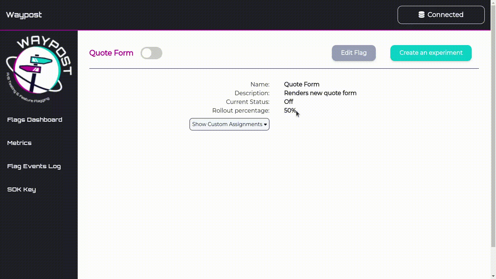
Create Experiment Form
From a Flag’s Details Page, one can create an experiment on a flag. The most important inputs are the
percentage of users tested and the metrics being tested. Note, Waypost doesn’t stop experiments automatically,
the duration input is only to help the experimenter plan.
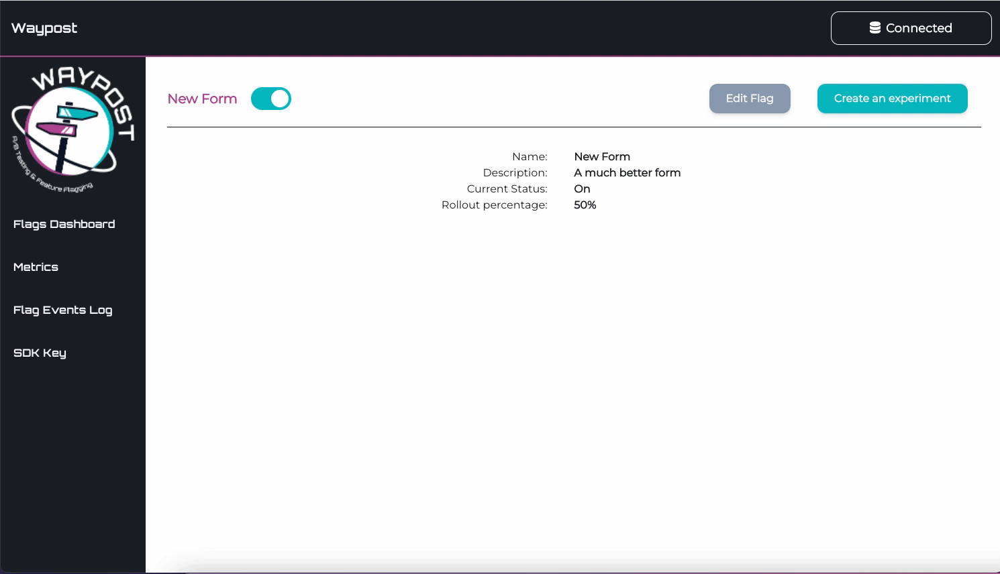
Flag Events Log
The Flag Events Log is used to keeping track of the changing state of one’s flags. It displays all flag
events, like creation, deletion, toggling, and editing of a flag. This page is most useful for debugging,
helping a developer make connections between bugs reported in their application and feature flags.
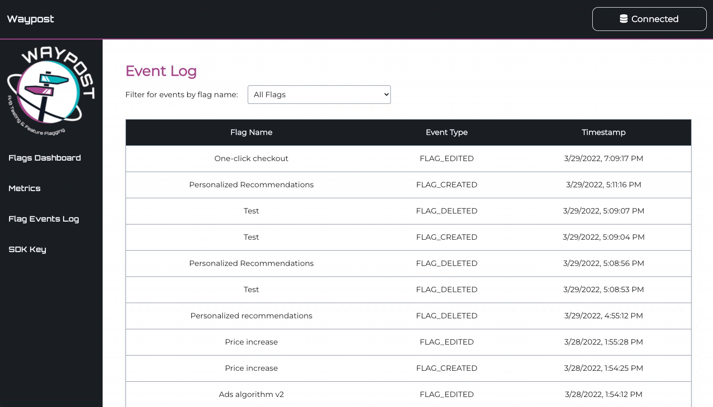
SDK Key
This page is used to create an SDK key, which is used in SDK to Flag Provider communication.
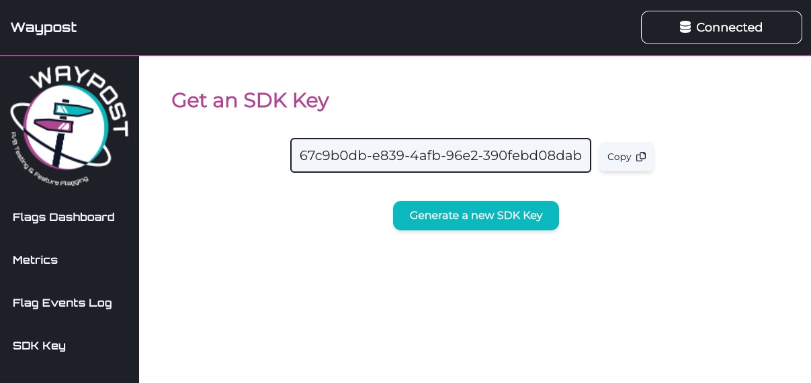
The Manager App’s Backend Server is responsible for:
- Managing API endpoints for supplying and editing flag and experiment data.
- Sending flag data and the SDK key to the Flag Provider.
- The statistics pipeline, which involves querying the Events DB for metric data at the end of an experiment
and performing statistical analysis on it to obtain the experiment’s results.
- The exposures pipeline, which involves querying the Events DB once a day for exposures data and aggregating
it. The exposure data can be used by developers to know when to stop an experiment.
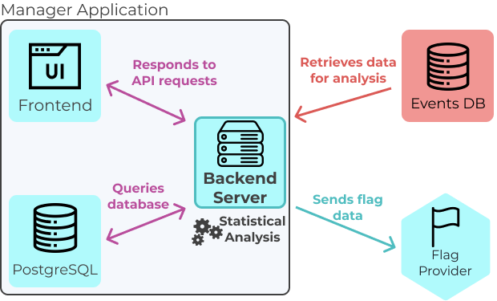
The Manager App’s PostgreSQL Database stores persistent experiment and flag data. Some examples are:
- Data pertaining to a flag, like it’s name, status (on/off), and rollout percentage.
- Flag event data, like at what time a flag was toggled, created, edited, or deleted.
- Custom assignment data, which is used to evaluate a flag a desired way for specific users.
- High-level experiment data, like id of the flag an experiment is on, the metrics being measured, the amount
of users placed in the test and control groups, and the results of the experiment.
- The most recent SDK key.
- Database connection data, such as the credentials and URL of the Events DB.
- Query strings used by the Manager App’s Backend to query the Events DB.
5.3 Flag Provider Service
The Flag Provider is a lightweight service that acts like a cache for flag data. It is responsible for
providing up-to-date flag data to instances of the SDK.
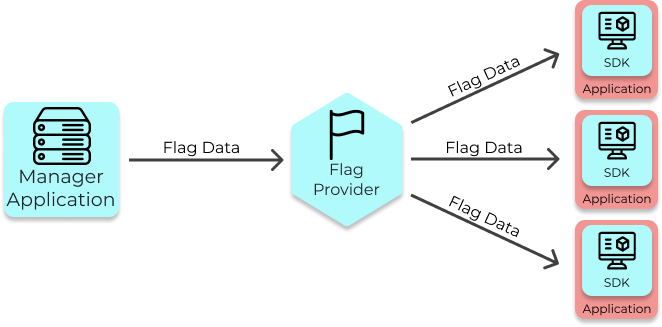
5.3.1 Why make providing flags a separate service?
As mentioned previously, the SDK is responsible for evaluating flags, so it must have a copy of that flag
data and that flag data must be updated in real time in case a feature needs to be turned off immediately. The
Manager App, which stores the flag data, could be connected to the SDK directly to serve it flags.
However, this solution isn’t very scalable because the specific functionality of managing SDK connections is
intertwined with the Manager Application’s other duties. Scalability is important in this case, because the
number of applications running the SDK can fluctuate significantly.
A better architecture for Waypost’s use case includes the Flag Provider, a service that is only responsible
for sending updates to the SDK in real-time. The Flag Provider is lightweight and thus easily scalable.
5.3.2 Flag Provider Scaling
The Flag Provider Service has been load tested to determine how many connections to SDK clients it can
handle. The maximum amount of connections is important for knowing when one would need to horizontally scale
the Flag Provider. Based on our environment, response times were extremely fast. However, connections were
refused starting at around 318 requests per second, indicating that the Flag Provider could sufficiently
handle around 300 SSE connections at once. An organization using Waypost would therefore need to deploy more
instances of the Flag Provider based on how many concurrent users they may have.
5.4 SDK
Waypost provides SDK’s for React.js (client-side) and Node.js (server-side). The SDK stores copies of the
flag data and is responsible for evaluating flags, thus it is also responsible for rendering two versions of a
site. In addition, the SDK assigns users into treatment groups for experiments.
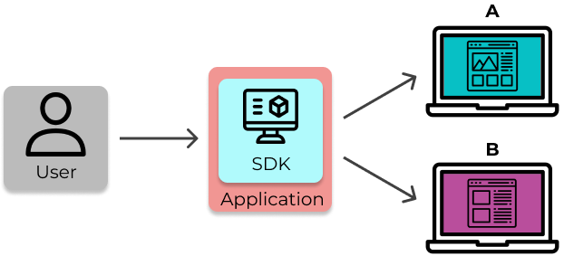
The developer can use the SDK client’s evaluateFlag(flagName) method which will return a boolean value. This
returned value is used in the app’s code to deliver one feature or another.
5.4.1 How Feature Evaluation Works
There are three flag attributes the evaluateFlag takes into account when evaluating:
- The status of a feature flag (on or off).
- Custom assignments on the flag.
- Rollout percentage of the flag.
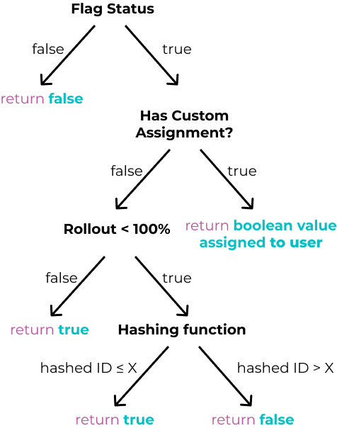
The custom assignment and rollout evaluation takes an additional input, a unique identifier (often a user
ID). For custom assignments, the unique identifier associated with the user of the application is compared to
the existing custom assignments on the flag.
For evaluating flags with rollout percentages (which includes all flags with experiments on them), a hashing
function takes the user’s unique identifier as input and outputs a number from 0 to 99. Then, if the hash is
less than the rollout percentage, the flag is “on” for that user, otherwise it is “off”.
The above explanation is the basis of how flags are evaluated with rollout percentages, but there’s a
downside. If an application has multiple flags with experiments, some users would be placed in the test group
for the majority of experiments instead the placement being more random. This is problematic because it
increases the likelihood the one experiment would affect another. It introduces an external variable.
That’s why Waypost uses an offset that’s assigned to each flag with a rollout percentage. The offset moves
the range of hashed user IDs that a flag is “on” for. For example, without an offset, two flags (Flag #1 and
Flag #2) with 50% rollout percentages would both be “on” for users with hashed IDs from 0-49.
If instead Flag #1 is given an offset of 30 and Flag #2 is given an offset of 5, then hashed IDs from 30-79
would receive Flag #1 and 5-54 would receive Flag #2.
5.5 How Flag Data is Sent From Manager To SDKs
The SDK receives feature flag data from the Flag Provider Service via SSE (Server-Sent Events).
When an application that contains the Waypost SDK starts running, it sends an initial GET request to the Flag
Provider to fetch the current feature flag data.
The SDK key is attached to this request and is validated by the Flag Provider before sending back a response.
If the SDK key is invalid, the data will not be returned.
Whenever a change is made to a feature flag, the Manager App sends a webhook to the Flag Provider. This then
triggers the Flag Provider to send the updated set of feature flags to the SDK via SSE.

5.6 How A/B Testing Works with Waypost
A/B Testing with Waypost involves three components, the Application (with the Waypost SDK within it), the
Events DB, and the Manager App.
- The Application places users in treatments and sends user event data to the Events DB.
- Developers manage experiments in the Manager App’s UI. This includes creating metrics for their experiments,
creating and stopping experiments, and viewing the results.
- The Manager App’s Backend queries the Events DB for exposures and metric data and performs statistical
analysis, and stores the results of the analysis in its own database.
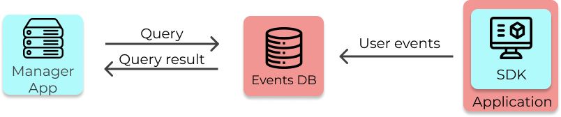
5.6.1 Events DB
In order to perform an A/B test with Waypost, the developers must have a database (that we call the Events
DB) set up. The Events DB must contain their app’s user event data (e.g., clicks, impressions, conversions).
This database must also contain a table that stores which treatment each user is assigned to when they are
exposed to an experiment.
5.6.2 Connecting Manager App to Events DB
Before starting an experiment, the developer must connect the Events DB to the Manager App. They also must
create the metrics they want to measure in the experiment.
To connect the Events DB and Manager App:
- The Events DB must give read access to the Manager App
- The developer must input the Events DB credentials and a query string into the database connection form in
the UI (shown above). The query string is used to query the Events DB for exposures and must return data in
the schema shown below.
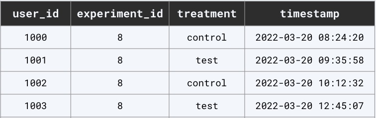
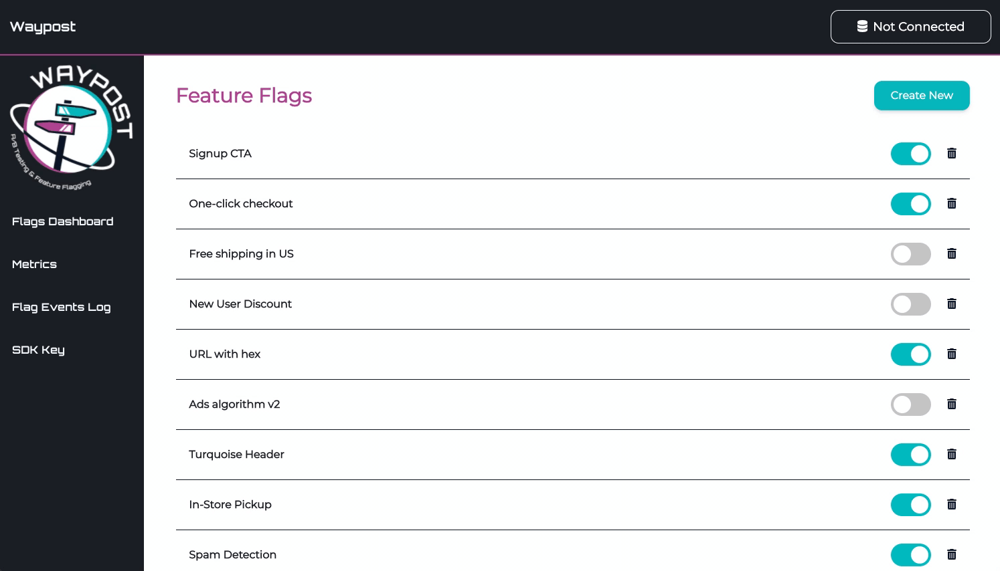
5.6.3 Metrics
To add metrics, the developer must provide:
- The name
- The type of metric
- A query string, which is used to query the Events DB
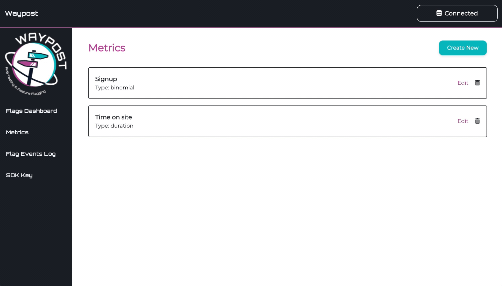
After the Manager App confirms it can query the Events DB to obtain a metric, the developer can attach that
metric to an experiment. Some common examples of metrics are:
- Click-through rate
- Signup rate
- Time spent on site
5.6.4 Experiment Exposures Pipeline
Once an experiment has been created, Waypost aggregates and analyzes this data. The Experiment Exposures
Pipeline runs once every night to aggregate the number of users bucketed into each cohort of the experiment,
and stores the aggregated data into a table in the Manager App’s database. In case the pipeline ever fails, it
also checks for and backfills any missing data each time it runs. The Manager App then displays this as a line
chart essentially depicting the sample size of each cohort over time. The purpose of this visualization is to
help the developer understand the sample size and determine how much longer the experiment should run.
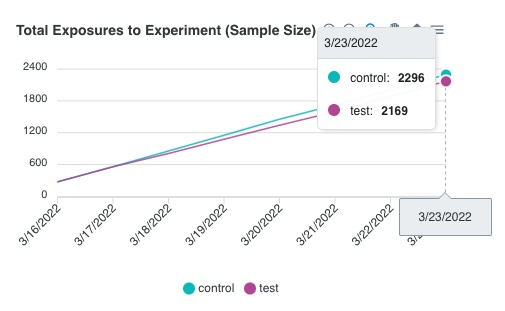
5.6.5 Statistics Pipeline
Once the developer is ready to view the results of their experiment, they can click on the “Refresh Results”
button in the Manager App’s UI. This triggers the Statistics Pipeline, which:
- Queries the Events DB for the metrics being tracked for this experiment.
- Analyzes this data using statistical tests, using the *t-test* for continuous metrics (count,
duration, revenue) and the *chi-squared* test for discrete metrics (binomial).
- Stores the results in the Waypost DB, which will be displayed in the UI as a table (shown below).
Information on how to interpret the statistical results are included in our documentation site.
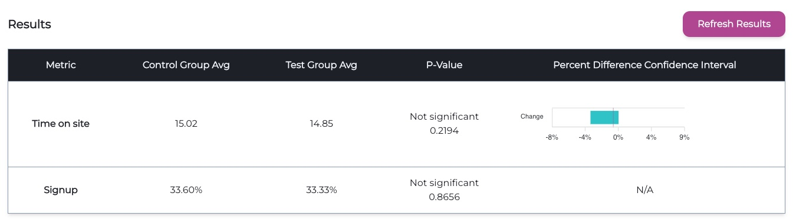
6. Engineering Decisions and Trade-Offs
6.1 Hosted vs. Self-Hosted
To fully implement Waypost, a number of important engineering decisions had to made, one of which was whether
the Waypost application would be hosted on the cloud or hosted by our users. We opted for a self-hosted option
for a couple reasons:
6.1.1 Flexibility in Deployment Options
With a self-hosted product, users have the freedom to deploy Waypost in whichever environment they prefer,
whether it’s deploying to a cloud service or hosting it on their local infrastructure. This means users can
choose how the Waypost application is monitored and scaled.
6.1.2 Data Security and Availability
Having a feature flag management service hosted on-site keeps security concerns to a minimum by reducing an
organization’s reliance on third-parties to host data. It’s impossible to know for sure that an external host
will keep their data secure and that their servers will always be available. A self-hosted solution keeps
these concerns in-house with full control of security and availability.
6.2 Collecting User Event Data
A critical component of A/B testing is the user event data that comes from the A and B versions of the
application. Without it, no analysis can be performed. To collect user event data for analysis, there were to
options to choose from:
- Let the organization collect the data and have Waypost query their database.
- Have Waypost collect the data and store it in its own database.

To make the decision, we considered our target user.
Like most companies interested in A/B testing, Solar Flair already has existing infrastructure to collect and
store user event data. If Waypost was designed to collect user event data in order to run its statistical
analysis, then an organization would need to add additional logging functions into their code to accommodate
the second analytics platform. Waypost’s data collection system would be redundant.
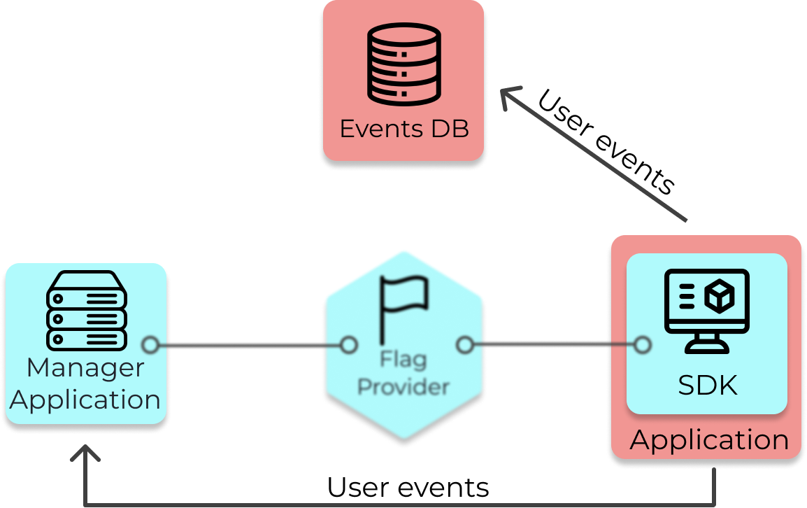
With this in mind, we thought it would be advantageous to use the existing data instead of duplicating it by
hosting our own analytics platform. By opting out of deploying an analytics platform with Waypost,
organizations can remain in full control over their own event logging processes.
6.3 Communication Between Manager App and Flag Provider
In the earliest implementation of Waypost, the SDK clients connected directly to the Manager App. However,
there are a number of issues with this approach.
6.3.1 The Downsides of the SDK and Manager App Communicating Directly
The biggest challenge is that the number of clients connecting to the Manager App is potentially quite large
since there would be one instance for each visitor to the site. For example, if there were 500 users of an
application with our SDK in it, the Manager App would have to manage 500 SSE connections in addition to
handling the UI’s API calls and running statistical analysis. The sheer volume of requests creates a
bottleneck that could have adverse effects on either the clients or the users interacting with the Manager
App.
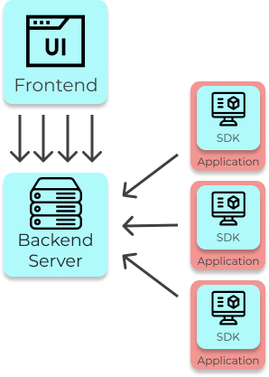
Another consequence of this architecture is that clients interface directly with the server that hosts
Waypost’s data. If a bad actor knew the IP address of the Manager App, it would be susceptible to attacks. The
alternative of separating these concerns by only allowing clients to interact with the Flag Provider minimizes
exposure to Waypost’s data, thus creating a layer of security.
Lastly, coupling the management and serving of flag data means that the two services must scale up together
instead of separately. With a separate Flag Provider, a developer can start up a new instance if the volume of
SDK clients is too large for just a single instance to handle. This also allows an organization to reduce
latency to the SDK clients by creating new flag provider instances physically closer to their users.
6.3.2 How should the Flag Provider and Manager App Communicate?
Due to these concerns, we decided to implement an intermediary service to provide feature flag data to the
SDK clients. To create such a service, we need a way for the Flag Provider to receive updated flag data from
the Manager App. The three major options we considered implementing were polling, a message broker, and
webhooks.
Polling is a method of communication that uses HTTP requests sent at a predefined interval to receive updated
data. For example, if the Flag Provider used polling, it would send a GET request to the Manager App every 10
seconds. As a response the Manager App would send the flag data. The downsides to this method are the lack of
real-time updates as requests are sent every 10 seconds. Also, this method means that lots of unnecessary
requests are getting sent between servers, because the there will be intervals when the flag data never
changes. If the flag data doesn’t change then the Flag Provider is sending GET requests for data that’s
already up to date.
To remedy the issues with polling, it’s possible to use a similar method known as “long polling”. With long
polling, a request gets sent to the server, and a response is only sent back when the server has a message to
send. In the context of Waypost, an SDK client would send a request to the Flag Provider. If the flag data has
changed since the previous GET request, then the server would send back the updated flags. Otherwise, the
server would wait to send a response until the flags are updated. Despite its benefits, we decided against
long polling because it still requires a high volume of requests to be verified and processed by the server.
Another option we considered was a message broker. A message broker is a commonly used tool that allows
services to communicate with one another. A message broker exchanges information through a system of
publishers and subscribers. Within the context of Waypost, here’s how a message broker would work:
- In the event that the flag data is updated, a message containing the flag data is published to the message
broker.
- The Flag Provider pulls the message from the message broker and saves the flag data to memory.
A message broker is a good option because communication between the two services will be event-driven and
happen in real-time. Also, the message broker gives some degree of fault tolerance. If the Flag Provider goes
down for any reason, messages sent from the Manager App will be available once it is up and running again.
Additionally, a message broker eliminates the need to create API endpoints on the two services.
The main trade-offs to this approach are that it would increase the complexity of the architecture. There’s
now another component to maintain and secure. Message brokers can also make debugging difficult because
there’s now another component logging errors.
Due to these reasons, we turned to another option, webhooks.
A webhook is an HTTP request that gets sent to another server when a predefined event occurs. In our case,
whenever an update is made to either the feature flag data or the SDK key, the Manager App sends a webhook to
the Flag Provider with the updated data. The Flag Provider saves the data to memory and forwards the flag data
to any SDK clients that are connected. Using this event-driven approach of sending a webhook on updates allows
the Flag Provider to have the latest version of the flag data.
The Flag Provider also should only make updates to its flag data if the webhook it received was from the
Manager App. To implement this, the Manager App attaches a header to each webhook with a secret key that only
the Flag Provider and Manager App have access to. If the verification header does not match the secret key,
then the request is rejected.
6.4 Providing Feature Flag Data to SDK
The main purpose of the Flag Provider is to ensure that clients running the Waypost SDK receive up-to-date
feature flag data. This ensures that SDK clients will have the data they need when they’re expected to have
it. One example of why this is crucial is in event of a new feature causing an application-crashing bug. A
developer, when notified of the issue, would toggle the flag that contained the new feature. One would want
that new flag data to be sent to the SDKs as fast as possible upon toggling.
The options we considered for communicating between SDK clients and the Flag Provider were WebSockets and
Server-Sent events (SSE).
6.4.1 WebSockets vs. Server-Sent Events
WebSocket is a communication protocol that allows bidirectional communication through a single TCP
connection. The WebSocket protocol can be described using three phases:
1. An initial GET request with some special headers are sent from the client to the server. This allows the
server to establish a connection using the WebSocket protocol.
2. The client and server communicate with each other. Messages can be sent back and forth using the WebSocket
connection.
3. The connection is closed when either the client and server call a “close connection” method.
WebSocket is useful because only one connection needs to be made and communication between the two entities
is real time. The main downside of WebSockets, for our use case, is that we don’t ever need to send messages
from the client to the server. In other words, we don’t need two-way communication. Another minor concern of
using WebSocket is that it adds some development overhead. It typically requires more code than other methods,
and it bars us from using useful HTTP functionality.

Server-Sent Events, or SSE, only allows for unidirectional communication between the server and a client.
Whenever feature flag data is updated on the Flag Provider, new data is sent to all the clients that are
connected. This approach minimizes latency, creates a real-time stream of feature flag data, and reduces the
number of connections that need to be made with the server. Here’s how SSE works:
- The client sends a request to the server.
- The server responds, confirming that the connection has been made.
- The server can now send messages to the client in response to events.
The drawback to using SSE is that the connection can occasionally be dropped. Connections are dropped when a
browser exceeds six open connections or the connection remains inactive for 30 seconds. For this reason, the
Waypost SDK automatically re-establishes lost connections after a connection is lost using the EventSource
API.
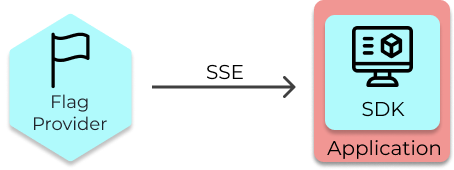
To ensure that each SSE connection is valid, the SDK client sends an SDK key in the initial request to the
Flag Provider. The Flag Provider, who stores a copy of the SDK key, checks that the stored key matches the key
provided by the client. Invalid keys are rejected, while valid ones are permitted to make a connection.
6.5 Statistics Pipeline
The statistics pipeline is a crucial piece of our architecture. The pipeline consists of three steps:
- Aggregate the metrics from the Events DB during the experiment’s time frame.
- Group the data by experiment and by treatment group.
- Run statistical tests on the data and write results.
This pipeline could take a lot of time and resources to run if a company had a large volume of user event
data and several experiments running. Thus, it was important to decide:
- How often to run this pipeline.
- Whether to deploy on a separate server or on the Manager App’s server. If the pipeline took a long
time to run, then having it on the Manager App’s back-end could block other operations such as updates to
flags.
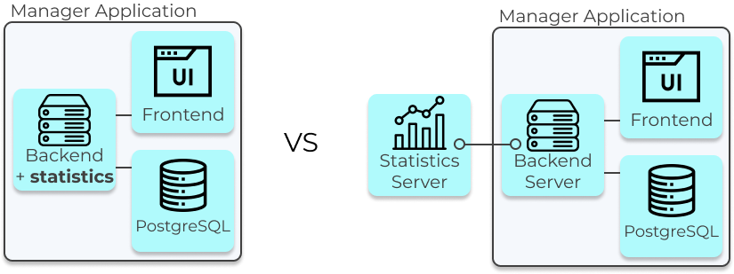
6.5.1 How often to run the pipeline
If the pipeline was run frequently, such as each time the page was loaded, the developer using Waypost could
quickly access up-to-date experiment results without having to wait, which would be the ideal user experience.
However, the trade-off with this is that it would take up a large amount of computing resources.
This can be optimized by taking into account how often a developer would need to see the results. As a
general rule, experimenters should not look at an experiment’s results until it is completed, because peeking
increases the false positive rate [7]. That means there isn’t a need to constantly refresh results.
Therefore, Waypost has a button called “Refresh Results”, which triggers the statistics pipeline when
clicked. This means that the results will only be computed when necessary, which saves server resources.
6.5.2 Deploy pipeline on separate server or on Manager App’s server
A concern with this approach was that the pipeline may take a long time to run, blocking other operations and
leading to a negative experience for the user. However, the pipeline took less than a second to run when
tested with a dataset of 10,000 users in the experiment with 2 metrics (our estimate for the average Waypost
user), thus eliminating that concern. Given the performance, Waypost has the statistics pipeline on the same
server as the Manager App instead of provisioning a dedicated server for it. The pipeline runs infrequently
and typically takes less than a second to run, therefore one does not have to worry about it blocking other
operations.
7. Future Work
7.1 Extended Database Integration
As Waypost currently exists, developers can only connect to an external PostgreSQL database when analyzing
user event data. In reality, organizations use a variety of different database technologies. Companies who
store user event data with something besides PostgreSQL will need to either load the data into a Postgres
database themselves, or alter Waypost’s source code to be able to connect to something different. A future
iteration of Waypost would aim to address this need by adding more database support.
7.2 Feature Flags by Application
Another valuable addition to Waypost would be to separate feature flag data by application. If an
organization runs multiple applications, it would be ideal for each application to only receive feature flag
data that pertained to that it. Currently, Waypost sends each application all the feature flag data.
Separating feature flags by application would reduce the amount of data being sent to each SDK client and also
make it so applications would only be able to read their own feature flag data.
7.3 Login Capability
A login capability would have many useful benefits, especially in terms of administration. By requiring users
to log in to the management application, an admin would be able to keep track of and control who edits data
and who has permission to edit data. To adhere to the principle of least privilege, an admin could make sure
that each team only has access to the exact data they need. Also, if a flag looks like it was toggled
erroneously, an admin could check who edited it last and reach out to them to discuss whether it was a mistake
or not.
7.4 Additional Language Support for SDKs
To allow Waypost to be used by as many developers as possible, it would be beneficial to add additional
language support for SDKs. As of right now, Waypost can only support users who use React and/or node for their
applications. Waypost could expand its usage by adding support for other common languages such as Go, Ruby,
Python, Java, and C++.
8. Glossary
-
Metrics - measures of quantitative assessment commonly used for assessing, comparing, and tracking
performance or production
-
Controlled Experiment - an experiment in which all the variable factors in an experimental group and
a comparison control group are kept the same except for one variable factor in the experimental group that
is changed or altered
-
Statistically Significant - a determination that a relationship between two or more variables is
caused by something other than chance.
-
Data Pipeline - a set of actions that ingest raw data from disparate sources and move the data to a
destination for storage and analysis [source].
-
Backfill - any process that involves modifying or adding new data to existing records in a dataset
-
Continuous data - data that can take any value within a range, such as a person’s weight
-
Discrete data - data that is countable and distinct, and can only take certain values, such as number
of signups.
9. References
-
Gallo, Amy. “A Refresher on A/B Testing”, https://hbr.org/2017/06/a-refresher-on-ab-testing
-
Parzych, Dawn. “What are Feature Flags”, https://launchdarkly.com/blog/what-are-feature-flags
-
Hodgson, Pete. “Feature Toggles (aka Feature Flags)”, https://martinfowler.com/articles/feature-toggles.html
-
Haddad, Rowan. “Fun with Flags: Where to Store Feature Flags”, https://www.flagship.io/feature-flag-storage
-
Dorn, Jeremy. “Open Source A/B Testing”, https://medium.com/growth-book/open-source-a-b-testing-dbc68aedab70
-
Pam, Robin. “Build vs. Buy: Choosing the Right Experimentation Solution”,
https://www.optimizely.com/insights/blog/build-vs-buy
-
Miller, Evan. “How Not to Run an A/B Test”, https://www.evanmiller.org/how-not-to-run-an-ab-test.html